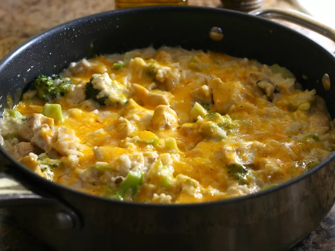

Chicken and Broccoli

Description
This is a simple chicken and broccoli dish that is cheap and delicious
Ingredients
- cooking spray
- 1 pound boneless skinless chicken breasts, cut into chunks
- 3 cups frozen broccoli florets
- 1 can condensed cream of mushroom soup
- 1 1/4 cups water
- 1 1/2 cups instant rice, uncooked
- 1 cup Kraft Shredded Three Cheese with a Touch of Philadelphia
Steps
- Grease a large skillet with cooking spray and place over medium-high heat. Cook and stir chicken in the hot skillet until browned, 2 to 3 minutes.
- Add broccoli, condensed soup, and water; stir. Bring to a boil.
- Stir in rice. Top with cheese. Cover and cook over low heat for 5 minutes.